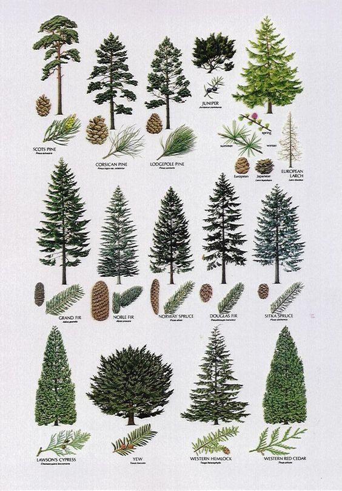

Elections and voting Elections are the process in which people vote to choose a person or a group of people for an official position. By voting, everyone can have a say in the government of his country. This makes voting the best way to ensure that a government acts how people want. Voting is a benefit of living in democracies, but it is also a responsibility. Citizens have to vote wisely in order to get a good government that represents them. The question of who can vote is a main issue in elections. Net every population of a country is allowed to vote. Historically, many people of groups have been excluded from voting. For instance, the ancient people of Athens never allowed women, foreigners, or slaves to vote. Today, most countries have a law that only citizens and adults can vote. Before an election, the political parties organize political campaigns. This means they raise money and shouldspeeches to communicate their ideas. Each party wants to tell the voters why its ideas are the best. Voters use this in informaintion to make a decision. To vote more than once or to use someone else's vote, which would make the election unfair. On election day, people go to the voting centers. They choose which politician they like and mark their choice of paper called a "ballot". Who the person chooses is a secret. This is one of the basic freedoms of democracies. The ballots are kept safely until the election is finished. After voting, all the ballots are collected and the results are counted. After counting all the votes wins the election. This person or political party can form the government. Democracies are formed through elections. 